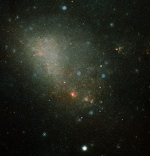

Guia das galáxias

Pequena Nuvem de Magalhães
Descrição
Grande Nuvem de Magalhães (comumente abreviada como LMC, do inglês Large Magellanic Cloud) é uma galáxia anã
satélite que orbita em torno da Via Láctea.
Dados Interessantes
- É rica em gases e poeira
- Foi batizada por Fernão de Magalhães
- A Grande Nuvem de Magalhães é uma das galáxias mais próximas da Via Láctea
Outras galáxias: Galáxia de Andromeda, OlhoNegro